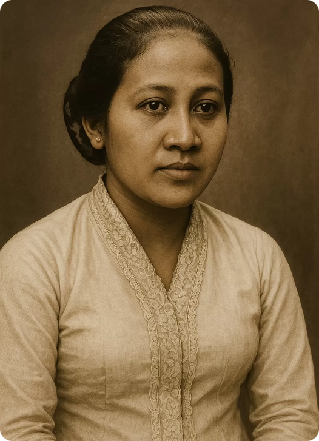

Kartini
Raden Ajeng Kartini lahir pada 21 April 1879 di Jepara. Ia berasal dari keluarga bangsawan Jawa. Ayahnya, Raden Mas Adipati Ario Sosroningrat, adalah seorang bupati. Meski ibunya, M.A. Ngasirah, bukan dari keluarga bangsawan, Kartini beruntung bisa bersekolah di Europeesche Lagere School (ELS) hingga usia 12 tahun. Di sanalah ia belajar bahasa Belanda, yang menjadi bekal penting dalam hidupnya. Masa Pingitan dan Ide-ide Progresif Setelah usia 12 tahun, Kartini harus menjalani masa pingitan, sebuah tradisi yang mengharuskannya tinggal di dalam rumah. Namun, masa ini justru menjadi waktu di mana pemikirannya berkembang pesat. Dengan kemampuan bahasa Belanda, ia aktif membaca buku, majalah, dan koran Eropa yang membahas tentang kemajuan, emansipasi, dan kesetaraan. Ia mulai prihatin dengan nasib perempuan pribumi yang tidak berhak mendapatkan pendidikan. Melalui surat-surat korespondensinya dengan teman-teman di Belanda, ia menuangkan gagasan-gagasan progresifnya tentang pentingnya pendidikan bagi perempuan. Perjuangan dan Sekolah Kartini Meskipun terikat tradisi, Kartini tidak menyerah. Ia mulai mengumpulkan teman-teman perempuannya untuk diajarkan membaca, menulis, dan keterampilan lainnya. Ini merupakan langkah awal dari cita-citanya mendirikan sekolah. Setelah menikah dengan Raden Adipati Joyodiningrat, suaminya mendukung penuh perjuangannya. Bersama sang suami, ia akhirnya mendirikan sekolah perempuan di kompleks kantor bupati Rembang, yang kemudian menjadi cikal bakal Sekolah Kartini. Akhir Hayat dan Warisan Perjuangan Kartini tidak berlangsung lama. Ia meninggal pada 17 September 1904 di usia 25 tahun, tak lama setelah melahirkan putranya. Meski hidupnya singkat, pemikirannya abadi. Kumpulan surat-suratnya diterbitkan menjadi buku "Habis Gelap Terbitlah Terang", yang menginspirasi banyak orang. Presiden Soekarno kemudian menetapkannya sebagai Pahlawan Kemerdekaan Nasional dan tanggal kelahirannya, 21 April, sebagai Hari Kartini, untuk mengenang perjuangan dan jasanya dalam memajukan kaum perempuan Indonesia.
← Kembali